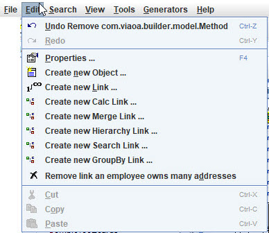
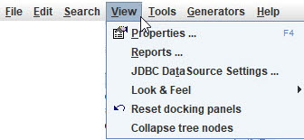
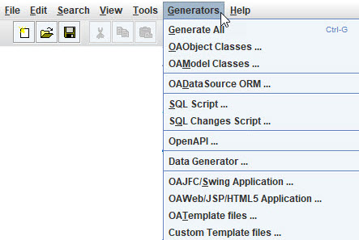

Main Menu
The File menu options.
- New Model - create empty unnamed model
- Open Model - open an *.obx model file
- Save Model - save as *.obx file
- Save Model As - make a copy into another *.obx file, renames open project to match new name.
- Close Model - close model, if changed the a prompt will allow saving first.
- Close All Models - close all open models, prompting first to save if model is changed.
- Print Preview - display a view of model for printing.
- Print - send model to printer,
- Page Setup - set printer settings.
- Recent models - list of recent models that were opened.
- Exit - close models, prompting first to save if model is changed, and then close OABuilder.
The Edit menu options.

- Undo - undo the last model change.
- Redo - repeat the last model change that was undone.
- Properties - view details for the selected desktop component.
- Create new Object - create a new Object ()Class/Entity) and add to the model.
- Create new Link - create a new Link (Reference) between two Objects.
- Create new Merge Link - create a new Link between two Objects, that uses a property path (reference navigation).
- Create new Hierarchy Link - create a new Link between an Object and a hierarchy of objects.
- Create new GroupBy Link - create a new Link that will group Objects from a property path.
- Remove Link - remove the selected Link.
The Search menu options.
- Objects - search for Objects in the active model.
- Properties - search for Properties in the active model.
- Calc Properties - search for Calculated Properties in the active model.
- Methods - search for Methods in the active model.
- Links - search for Links in the active model.
- Triggers - search for Object Triggers in the active model.
- Filters - search for Object Filters in the active model.
- Dependent Properties - search for matching Dependent Properties in the active model.
The View menu options.

- Properties - view model properties using editors.
- Reports - model listing and changes.
- JDBC DataSource Settings - database
- Look & Feel
- Reset docking panels
- Collapse tree nodes
The Tools menu options.
- Parse source code - code parser to reverse engineer and load/update model.
- Import new Objects - find model objects from Java pojos.
- Split Object - used to move properties from one object to another.
The Generators menu options.

- Generate All - run all of the generators.
- OAObject Classes - run generator for creating model entity classes. This defines the Class info.
- OAModel Classes - run generator that creates model objects. This defines how the Class objects can be plugged into application using MVC.
- OADataSource ORM - generate datasource that will automitically allow OAObjects to work with datasources/databases.
- SQL Script - creates DDL for the models selected database type.
- SQL Changes Script - createss SQL and DDL for model changes, that will update the database with any changes done by model.
- OpenAPI - create REST API Swagger web documents.
- Data Generator - generated program that can be used to generated sample/test data.
- OAJFC Swing Application - generate Java desktop application using OA JFC/Swing UI components.
- OAWeb/JSP/HTML5 Application - generate Web application using dynamic templates, using OA UI components.
- OATemplate files - copy files from project, filling in template tags with model data.
- Custom Template files - copy files from project, filling in template tags with model data.
The Help menu options.

- Help - this help system.
- Help Context - allows clicking on OABuilder UI to get help.
- About - get OABuilder version and product information.